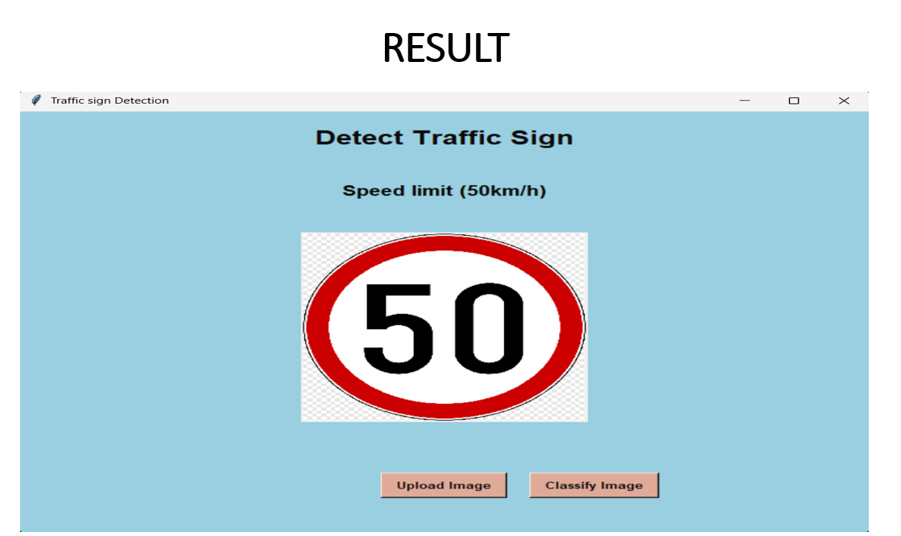
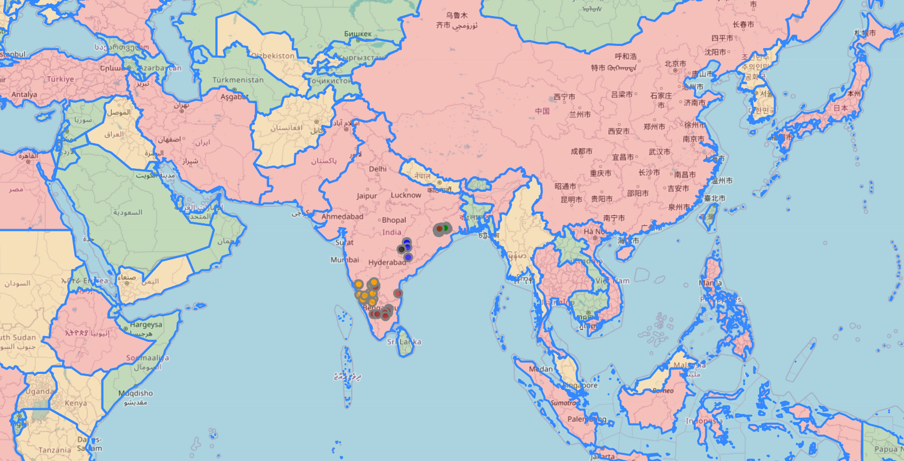
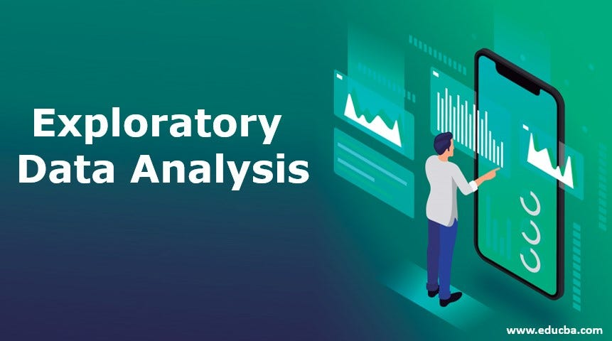

About Me

I’m Velpula Nithin, a passionate and aspiring Machine Learning Engineer. I am currently pursuing my Bachelor of Technology in Artificial Intelligence and Machine Learning from 2023 to 2026. I have a solid background in computer engineering from my diploma studies and have gained practical experience through various projects and internships.
With a creative mind and a passion for problem-solving, I’ve developed several applications. These include an Online Housing App, a Rock-Paper-Scissors Game, Tic-Tac-Toe, a Weather App, and a Quiz Game, all created using HTML, CSS, and JavaScript.
My academic experience also features significant AI projects, such as Image Classification using CNNs and a Traffic Sign Detection system using Deep Learning.
I have improved my technical skills through certifications and internships with organizations like DC Academy, Cisco, YBI Foundation, Teachnook x IIT Roorkee, Octanet, MicroIT, and CodeAlpha.
My focus areas include Python development, cybersecurity, machine learning, AI, and data analytics.
Skills
- Python
- Java
- MySQL Database
- Machine Learning
- Deep Learning
- Image Processing
Projects
Traffic Sign Detection
A CNN-based traffic sign classification project using Python and TensorFlow.
Data Visualization
A project that visualizes complex datasets using Python libraries like Matplotlib and Seaborn. It helps uncover patterns and insights through interactive charts and graphs.
EDA(Exploratory Data Analysis)
This project involves analyzing and summarizing datasets to understand their structure, detect patterns, and find useful relationships using Python, Pandas, and Matplotlib.
web scraping
A Python-based web scraping project that collects data from websites using BeautifulSoup and requests, useful for gathering real-time information like news, prices, and articles.

Weather app
A weather forecasting app developed using JavaScript and a public weather API. It shows real-time weather updates based on the user’s location or searched city.

Quiz Game Project
An interactive quiz game built using HTML, CSS, and JavaScript that tests users with multiple-choice questions and provides instant feedback.
Resume
Download My Resume (PDF)Contact
Email: nithinvelpula419@gmail.com
Phone: +91-9347768630